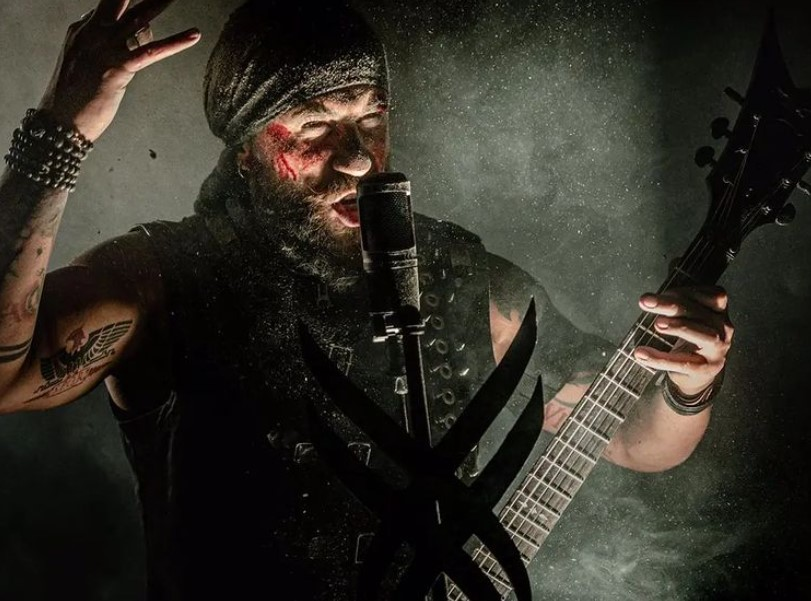
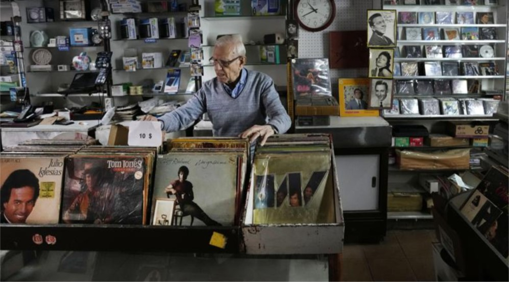
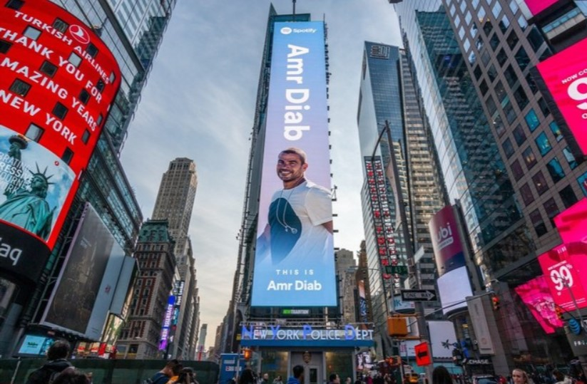
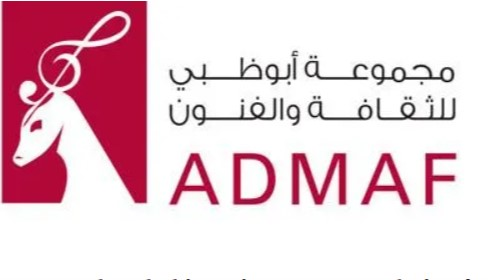

Home
Latest News
About Us
Contact

Lebanese musicion Jean Pierre Haddad
The Arab heavy metal community is in mourning after the death of Jean-Pierre Haddad, frontman and guitarist of Kimaera.While the band did not reveal the cause of death, Lebanese news site IM Lebanon reported that Haddad, 39, died in his Cairo apartment from asphyxiation after a natural gas leak.
READ MORE

Hamra Street
From his small music shop on Beirut’s Hamra Street, Michel Eid witnessed the rise and fall of Lebanon through the changing fortunes of this famed boulevard for more than 60 yearsHamra Street was the center of Beirut’s glamour in the 1960s and 1970s, home to Lebanon’s top movie houses and theaters, cafes frequented by intellectuals and artists, and shops selling top international brands. It saw a revival the past decade, thriving with international chain stores and vibrant bars and restaurants..
READ MORE
Nancy Ajram
Lebanese recording artist, Nancy Ajram shared Wednesday an update about her upcoming music.
READ MORE

Amr Diab
Amr Diab is the firt arab artist to get his very own times square billbord.the move is a bid to promote the music and culture of the Middle East and North Africa
READ MORE

Abu Dhabi music festival
Abu Dhabi Festival, run by the Abu Dhabi Music & Arts Foundation (ADMAF), is the principal partner of the week-long Arab Music Days celebration at Berlin's Pierre Boulez Saal. Arab Music Days closes on Saturday evening in Berlin, after a successful run from 1-5 March, which has seen events livestreamed around the world. The week-long celebration of diverse Arab music,
READ MORE